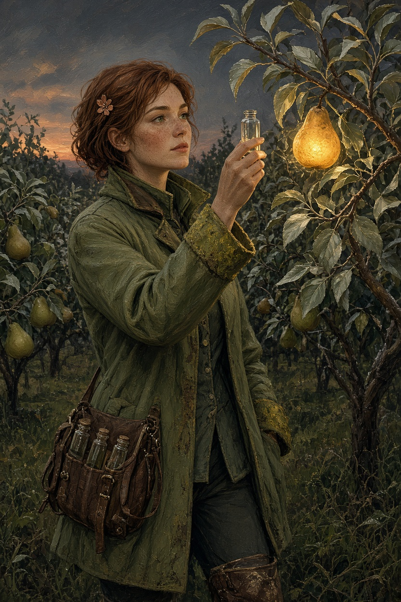
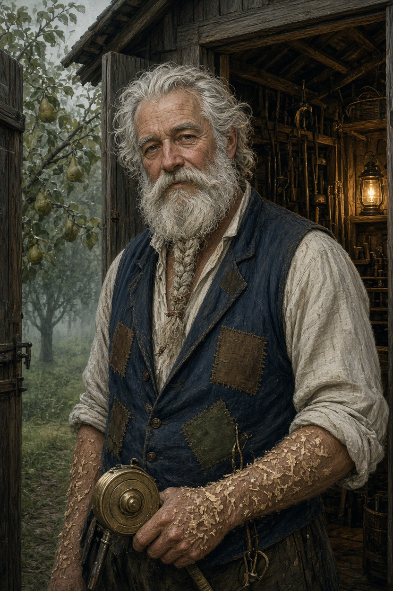
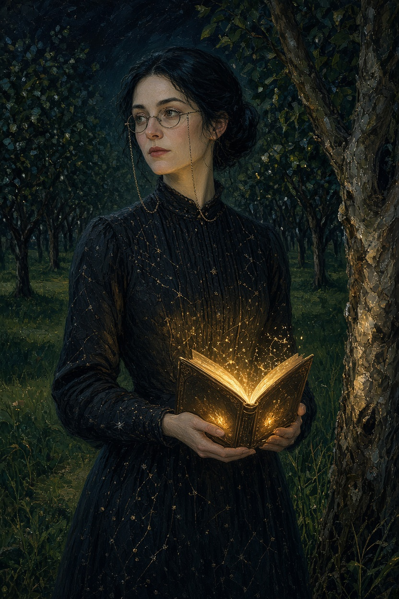
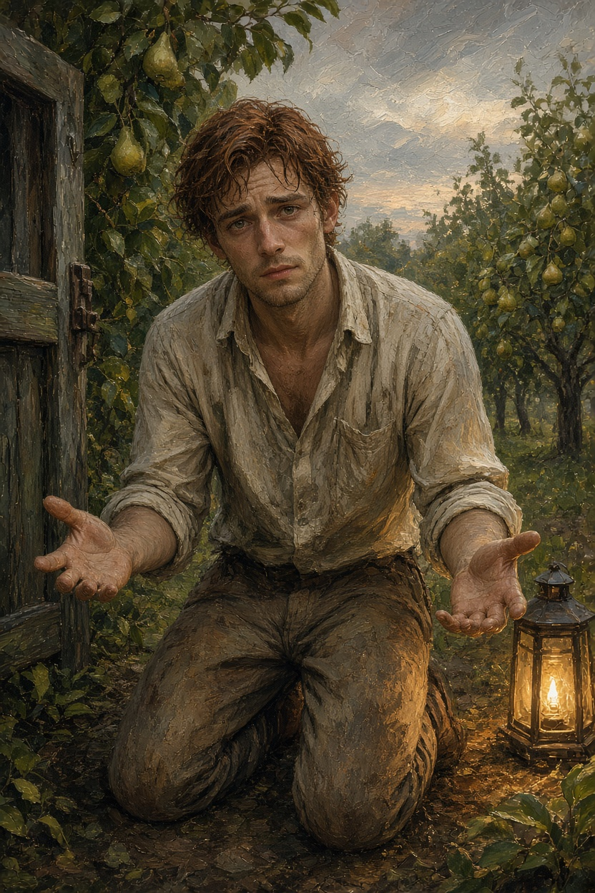
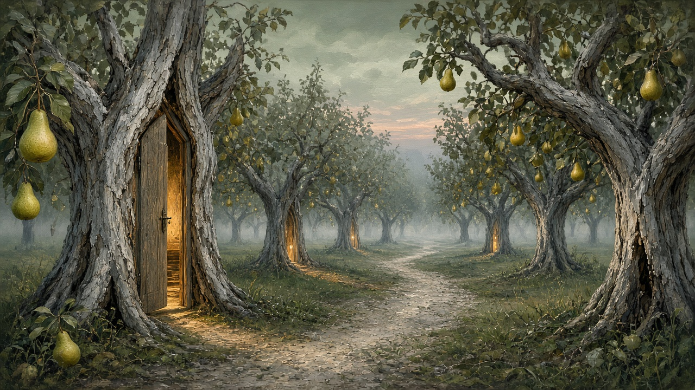
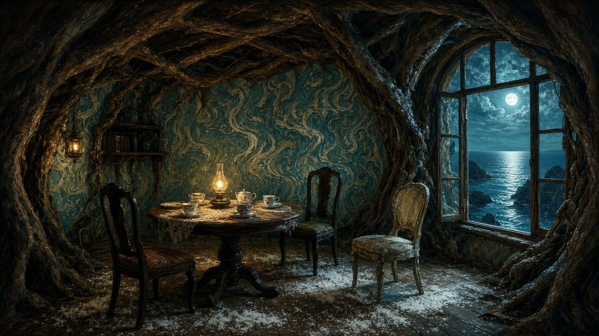
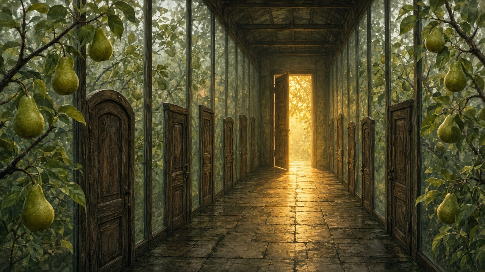

Workshop record
What this site is
The Orchard of Unspent Hours is an original English story in three parts. Lina, Bram, Sera, and Edwin tell it in their own words. On Vercel, Grok speaks those words aloud and, after the last page, answers questions in character.
- The story is 5,043 words and can be followed from the lane to the planting.
- It has a beginning, a middle, and an end, on three linked pages.
- Four people are shown and described. The task asks for at least three.
- Three places are shown and used in the plot: the west row, the Room of Tides, and the Closing Gallery.
- Seven generated images are on the site. The task asks for at least six.
- Previous and Next links connect every part. Portraits and Play speak the English aloud.
How to present it
Tell this. Do not read the pages straight through.
- Open the beginning and say the promise in one sentence: a brother went into the orchard to plant their mother's pear slips, and the unfinished hour grew rooms.
- Show Lina, Bram, and Sera. Say who decided what. Lina goes in. Bram admits he locked the gate. Sera refuses to plant the slips in the wrong room.
- Play one short paragraph with Slower English on, so the voice is part of the presentation rather than the whole of it.
- Move to the sea room and the gallery with the Next link. Point at the image, then say what changed.
- End on the planting: six slips, one young tree that keeps a seam, Edwin walking home.
- Leave the question box visible. If someone asks about a choice, let that character answer.
Characters




| Character | Visual description | Notes / tool |
|---|---|---|
| Lina Voss | Olive field coat, copper hair clip, vial satchel, dusk orchard, glowing pear. | Portrait, Grok image. Voice eve. |
| Bram | Patched indigo waistcoat, braided beard, toolshed doorway, brass tape. | Portrait, Grok image. Voice leo. |
| Sera Quill | Constellation dress, spectacles on a chain, book-lantern in the dark row. | Portrait, Grok image. Voice ara. |
| Edwin Voss | Kneeling, muddy knees, open hands, door frame and a small lantern. | Portrait, Grok image. Voice rex. |
Locations



| Location | Visual description | Notes / tool |
|---|---|---|
| West row | Dusk orchard, fog, doors in the trunks, one warm doorway, gravel path. | Grok image. Opening page. |
| Room of Tides | Hollow-tree parlor, sea window, table set for three, salt on the floor. | Grok image. Middle page. |
| Closing Gallery | Long glass corridor, many closed doors, one gold opening, pears outside. | Grok image. Last page. |
Image prompts
Shared direction for every picture: painterly cinematic storybook illustration, fine brush texture, pear green, salt silver, and amber light, no text.
- Lina. A young surveyor at dusk among pear trees, cropped auburn hair with a copper clip, freckles, olive coat, satchel of glass vials, holding one vial toward a fruit glowing like a lantern.
- Bram. An older groundskeeper in a toolshed doorway, silver beard braided with twine, patched indigo waistcoat, wood shavings, a brass measuring tape in one hand.
- Sera. A night librarian in a dark orchard aisle, hair in a low knot, spectacles on a chain, charcoal dress embroidered with constellations, holding a lantern shaped like an open book.
- Edwin. A thinner young man kneeling in the orchard, earth on his knees, hands lifted as if he has just let go of a wooden door.
- West row. Wide dusk view of pear trees whose trunks have split into wooden doorframes, one door ajar, fruit glowing, fog down the gravel path. No people.
- Room of Tides. Parlor inside a hollow tree, salt on the floorboards, wallpaper like seawater, table set for three, window onto a moonlit inland sea. No people.
- Closing Gallery. Long glass corridor lined with closed doors of different sizes, pear branches against the glass, one unlatched door spilling gold light. No people.
What the tools did
The plot, the pages, and the pictures were shaped with Grok. The live site adds what a static page cannot do. /api/speak calls the xAI text-to-speech API so each person has a voice. /api/ask calls Grok 4.3 with the finished story as canon. Talk opens a live voice agent for the chosen person: the browser streams the microphone, Grok answers in that voice, and the reply stays inside the plot and in English. The key is an environment variable, XAI_API_KEY, not a value in the browser.
Decisions that stayed fixed: the genre is a quiet fantasy about unfinished work, not a battle. The mother is already dead before the story starts. Bram's fault is specific, a locked gate, and it is repaired by holding a door open. The ending is planting, not a spell. One tree keeps a seam so the idea survives without undoing the ending.